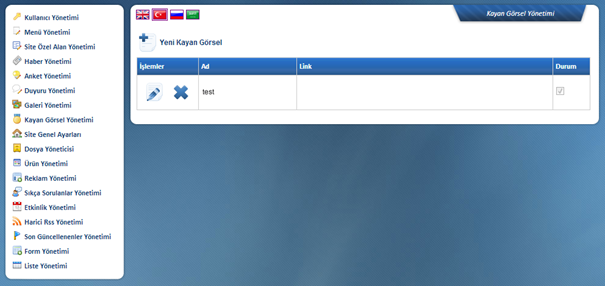

Kayan Görsel Yönetimi
Sitede bir alanda görsellerin kayan þekilde gösterildiði alanýn içerik yönetiminin yapýldýðý alandýr.

Yeni Kayan Görsel týklandýðýnda ;
Ad: Görsel isminin yazýlmasý gerekmektedir.
Resim: Fotoðraf adresinin eklenmesi gereken kýsýmdýr.
Bu kýsýmda kolaylýk saðlanmasý amacýyla Görsel Ekle ikonu eklenmiþ olup
týklandýðýnda yönetim panelinde bulunan Dosya Yöneticisi’ ndeki klasörleri
küçük bir pencerede açacak ve fotoðraf seçilip çift týklandýðýnda Görsel Yolu
oluþturmuþ olacaktýr.
Link: Web
adresi yazýlýr.
Sitede kayan görsel þeklinde bulunan fotoðraf týklandýðýnda yeni
sayfada istenilen web adresinin açýlmasýný saðlar.
Durum: Sitede o görselin kayan görsel olarak kullanýlýp / kullanýlmadýðý ifade eder. Kullanýlmasý için Aktif seçeneði iþaretli olmalýdýr.